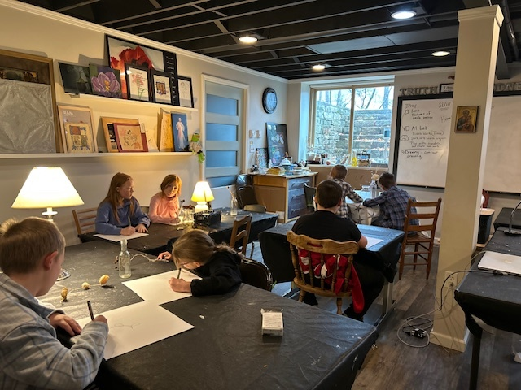
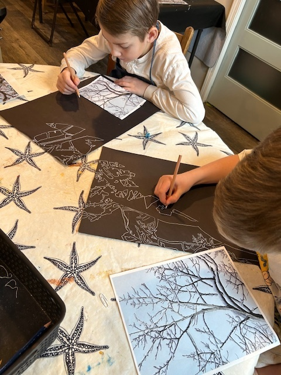
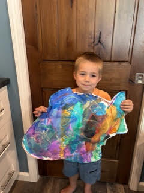
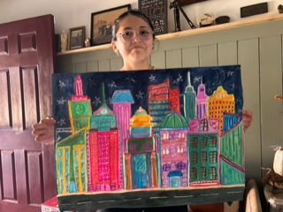
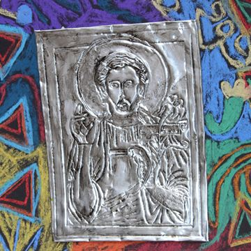
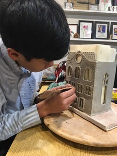
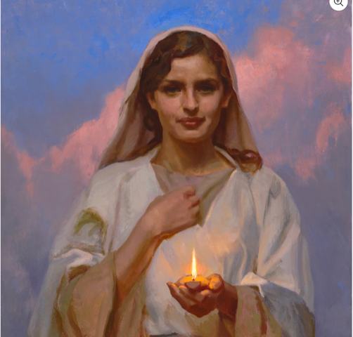
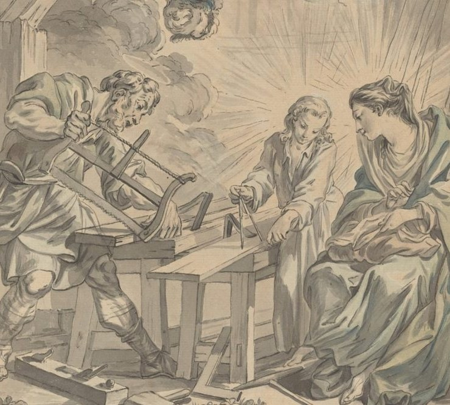

Our classes
At Saint Joseph's AtelierThe program is a holistic art curriculum where students encounter many media throughout the semester.
Students explore a wide variety of artistic techniques while learning from master artists and the beauty of God's creation. Each semester offers classes for several levels. Classes focus primarily on 2-Dimensional art but will now also provide opportunities to experience 3-Dimensional clay building. Very young artists—"Little Lambs" (ages 4–6)—learn art fundamentals through instructor-led lessons with plenty of room for exploration. Art Foundations and Skills is where primary-level artists (ages 8–16) focus on developing an artist's eye by drawing and painting from observation with fewer step-by-step lessons. Teens who desire to work with more space for quiet concentration and independent work may join the "Silent Flight Barn Owls" (ages 13–17) and soar deeper into technical skills. Sacred Art class members will explore the beauty of art found in Catholic churches, sacred books, and items used for liturgy. Mary's Lamp-Lighters offers a night out for moms, and Art Café Days are special art camp days each month for everyone to enjoy. Select a link below to view course descriptions, dates, and fees.

Art Foundations and Skill Building
This class is perfect for beginners to intermediate artists. Introduction to art history, elements of art, and principles of design. Students work with media such as chalk pastel, oil pastel, watercolor, acrylic on canvas, and printmaking.

Little Lambs
A two hour fifteen minute workshop meeting once a month to allow very young children ages 4-6 years old to explore line, shape and color. Students are introduced to art history and projects integrating elements of art on a level that meets their development needs.

Silent Flight Barn Owls
Quiet your mind. Focus your art. Leave the noise outside. A once-monthly meeting for teens 14–18 years who desire a place to sharpen and hone artistic skills beyond those learned in Art Foundations. The first Thursday of the month is your time and space.

Sacred Art Atelier and Scriptorium
Faith and creativity come together through projects inspired by the Sacred Heart, Christ the King, Saint Joseph, icons, illuminated manuscripts, church sculpture, and other beautiful traditions of Catholic art.

Art Café Days
Focused on art process and experimentation, each Art Café Day will serve up a different menu of art media. This day is a relaxed time where students can create a project according to their own personal inspiration.

Mary’s Lamp-Lighters
A time to work from a prayerful place of peace and rest. Join a community of Catholic women who desire support and encouragement in nurturing their creative side, making art that helps us calm our system, develop skills, or explore different media—all for the purpose of creating even more beauty in the world than you already do!

Class Category Details
Select a program from the filter menu to view ages, format, media, and what to expect. Dates, tuition, and seating details are on the Calendar page.
What's included
All Art Supplies Included
Students have access to high-quality materials for every project; drawing pencils and pens, watercolor and acrylic paints, brushes, drawing and watercolor paper, canvas, chalk pastels, oil pastels, linoleum block and printmaking supplies, glues, and ceramic clay.
Art History & Artist Studies
We look at the greats; no child is too young for art history. We learn to take a closer look at the world with the guidance of Master artists such as Van Gogh, O’Keeffe, Cézanne, John Singer Sargent, Henri Rousseau, Winslow Homer, Mary Cassatt, and children’s book illustrators, Pauline Baines, and Eric Carl while exploring how to implement their artistic techniques in our own artwork.
Personal Instruction
Small, semi-private class sizes of seven students allow for individualized guidance, encouragement, and support according to the needs and personality of each child, ensuring every student the freedom to develop their artistic skills and confidence.
Original Take-Home Projects
Every student creates unique artwork inspired by their own ideas and imagination. Projects are designed to encourage creativity rather than simply following templates.
